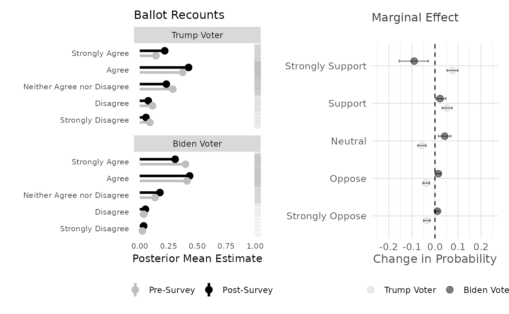

Navigating the electoralContestation Package
usePackage.RmdBuild
You can build the package from github by installing the
package devtools and then using that to install from my
github repository
#install.packages('devtools')
devtools::install_github("crweber9874/electoralContestation", force= TRUE)## Using github PAT from envvar GITHUB_PAT. Use `gitcreds::gitcreds_set()` and unset GITHUB_PAT in .Renviron (or elsewhere) if you want to use the more secure git credential store instead.## Downloading GitHub repo crweber9874/electoralContestation@HEAD## cpp11 (NA -> 0.5.2 ) [CRAN]
## BH (NA -> 1.87.0-1 ) [CRAN]
## RcppEigen (NA -> 0.3.4.0.2) [CRAN]
## progress (NA -> 1.2.3 ) [CRAN]## Installing 4 packages: cpp11, BH, RcppEigen, progress## Installing packages into '/home/runner/.cache/R/renv/library/electoralContestation-99ca6cb9/linux-ubuntu-noble/R-4.5/x86_64-pc-linux-gnu'
## (as 'lib' is unspecified)## ── R CMD build ─────────────────────────────────────────────────────────────────
## * checking for file ‘/tmp/RtmpwRhzL2/remotes20ea68bd482b/crweber9874-electoralContestation-8116aa2/DESCRIPTION’ ... OK
## * preparing ‘electoralContestation’:
## * checking DESCRIPTION meta-information ... OK
## * checking for LF line-endings in source and make files and shell scripts
## * checking for empty or unneeded directories
## NB: this package now depends on R (>= 3.5.0)
## WARNING: Added dependency on R >= 3.5.0 because serialized objects in
## serialize/load version 3 cannot be read in older versions of R.
## File(s) containing such objects:
## ‘electoralContestation/data/electoralConstestation.rda’
## * building ‘electoralContestation_0.1.0.tar.gz’## Installing package into '/home/runner/.cache/R/renv/library/electoralContestation-99ca6cb9/linux-ubuntu-noble/R-4.5/x86_64-pc-linux-gnu'
## (as 'lib' is unspecified)Data
There are sample data in repository to avoid needing to download, recode, etc from your local machine. This needs some updating, as the data build is the data for the 2025 MPSA meeting and does not yet include the newer BYU CES data
##
## Attaching package: 'dplyr'## The following objects are masked from 'package:stats':
##
## filter, lag## The following objects are masked from 'package:base':
##
## intersect, setdiff, setequal, union## # A tibble: 6 × 116
## black white latino asian american_indian age married female college faminc
## <dbl> <dbl> <dbl> <dbl> <dbl> <dbl> <dbl> <dbl> <dbl> <dbl>
## 1 0 1 0 0 0 61 1 1 1 0
## 2 0 1 0 0 0 41 1 1 1 1
## 3 0 0 0 0 1 25 0 0 1 0
## 4 0 1 0 0 0 76 0 1 1 0
## 5 0 1 0 0 0 63 0 0 0 0
## 6 0 1 0 0 0 72 1 1 0 1
## # ℹ 106 more variables: survey_weight <dbl>, county_fips <dbl>, CD <dbl>,
## # LD <dbl>, zipcode <dbl>, caseID <dbl>, state <chr>, year <dbl>,
## # survey <chr>, prepost <chr>, presvote_trump_2020 <dbl>, voted2020 <dbl>,
## # most_important_problem <chr>, attend_march <dbl>, criticize_election <dbl>,
## # burn_flag <dbl>, recount <dbl>, court <dbl>, certify <dbl>, concede <dbl>,
## # state_certify <dbl>, violent <dbl>, new_election <dbl>, stolen_2020 <dbl>,
## # free_fair <dbl>, voteconfidence <dbl>, auth_1 <dbl>, auth_2 <dbl>, …Estimation Steps
The package is meant to help with the analytic workflow. I’ve organized the functions thematically:
modeling: There are three main modeling functions,brms.ordinal,brms.linearandbrms.nominal. These are used to estimate ordinal, linear and nominal models, respectively. TheIVvariable is the independent variable, and theDVvariable is the dependent variable. TheIVvariable is specified as a formula, so that higher order interactions can easily be specified. Thus far, I’ve only implemented thebrms.ordinalfunction, so we can modify this one to our needs and then I’ll update the others.prediction: There are two main prediction functions,posterior_meansandposterior_pme. Theposterior_meansfunction generates posterior predictions with two-way interactions, while theposterior_pmefunction generates posterior predictions with marginal effects. These functions are used to generate predictions from the models estimated in the previous step.plotting: There are two main plotting functions,ggPointandggMargins. TheggPointfunction generates a point estimate plot with a rug plot of the dependent variable distribution, while theggMarginsfunction generates a marginal effects plot with a rug plot of the dependent variable distribution.
Modeling
Assume “Contest the outcome in the courts” is the DV and we’re examining winner/loser effects. The moderator variable is the vote for Trump in 2020, and the independent variable is the pre-post condition.
## Loading required package: Rcpp## Loading 'brms' package (version 2.22.0). Useful instructions
## can be found by typing help('brms'). A more detailed introduction
## to the package is available through vignette('brms_overview').##
## Attaching package: 'brms'## The following objects are masked from 'package:tidybayes':
##
## dstudent_t, pstudent_t, qstudent_t, rstudent_t## The following object is masked from 'package:stats':
##
## ar
IV <- "presvote_trump_2020 + prepost + presvote_trump_2020:prepost + college"
# Policy Politics Models
recount <- brms.ordinal(data = electoral_contestation, IV = IV, DV = "recount")## Warning: Rows containing NAs were excluded from the model.## Compiling Stan program...## Start sampling##
## SAMPLING FOR MODEL 'anon_model' NOW (CHAIN 1).
## Chain 1:
## Chain 1: Gradient evaluation took 0.000488 seconds
## Chain 1: 1000 transitions using 10 leapfrog steps per transition would take 4.88 seconds.
## Chain 1: Adjust your expectations accordingly!
## Chain 1:
## Chain 1:
## Chain 1: Iteration: 1 / 2000 [ 0%] (Warmup)
## Chain 1: Iteration: 200 / 2000 [ 10%] (Warmup)
## Chain 1: Iteration: 400 / 2000 [ 20%] (Warmup)
## Chain 1: Iteration: 600 / 2000 [ 30%] (Warmup)
## Chain 1: Iteration: 800 / 2000 [ 40%] (Warmup)
## Chain 1: Iteration: 1000 / 2000 [ 50%] (Warmup)
## Chain 1: Iteration: 1001 / 2000 [ 50%] (Sampling)
## Chain 1: Iteration: 1200 / 2000 [ 60%] (Sampling)
## Chain 1: Iteration: 1400 / 2000 [ 70%] (Sampling)
## Chain 1: Iteration: 1600 / 2000 [ 80%] (Sampling)
## Chain 1: Iteration: 1800 / 2000 [ 90%] (Sampling)
## Chain 1: Iteration: 2000 / 2000 [100%] (Sampling)
## Chain 1:
## Chain 1: Elapsed Time: 7.269 seconds (Warm-up)
## Chain 1: 7.047 seconds (Sampling)
## Chain 1: 14.316 seconds (Total)
## Chain 1:
##
## SAMPLING FOR MODEL 'anon_model' NOW (CHAIN 2).
## Chain 2:
## Chain 2: Gradient evaluation took 0.000492 seconds
## Chain 2: 1000 transitions using 10 leapfrog steps per transition would take 4.92 seconds.
## Chain 2: Adjust your expectations accordingly!
## Chain 2:
## Chain 2:
## Chain 2: Iteration: 1 / 2000 [ 0%] (Warmup)
## Chain 2: Iteration: 200 / 2000 [ 10%] (Warmup)
## Chain 2: Iteration: 400 / 2000 [ 20%] (Warmup)
## Chain 2: Iteration: 600 / 2000 [ 30%] (Warmup)
## Chain 2: Iteration: 800 / 2000 [ 40%] (Warmup)
## Chain 2: Iteration: 1000 / 2000 [ 50%] (Warmup)
## Chain 2: Iteration: 1001 / 2000 [ 50%] (Sampling)
## Chain 2: Iteration: 1200 / 2000 [ 60%] (Sampling)
## Chain 2: Iteration: 1400 / 2000 [ 70%] (Sampling)
## Chain 2: Iteration: 1600 / 2000 [ 80%] (Sampling)
## Chain 2: Iteration: 1800 / 2000 [ 90%] (Sampling)
## Chain 2: Iteration: 2000 / 2000 [100%] (Sampling)
## Chain 2:
## Chain 2: Elapsed Time: 7.447 seconds (Warm-up)
## Chain 2: 7.168 seconds (Sampling)
## Chain 2: 14.615 seconds (Total)
## Chain 2:
##
## SAMPLING FOR MODEL 'anon_model' NOW (CHAIN 3).
## Chain 3:
## Chain 3: Gradient evaluation took 0.000512 seconds
## Chain 3: 1000 transitions using 10 leapfrog steps per transition would take 5.12 seconds.
## Chain 3: Adjust your expectations accordingly!
## Chain 3:
## Chain 3:
## Chain 3: Iteration: 1 / 2000 [ 0%] (Warmup)
## Chain 3: Iteration: 200 / 2000 [ 10%] (Warmup)
## Chain 3: Iteration: 400 / 2000 [ 20%] (Warmup)
## Chain 3: Iteration: 600 / 2000 [ 30%] (Warmup)
## Chain 3: Iteration: 800 / 2000 [ 40%] (Warmup)
## Chain 3: Iteration: 1000 / 2000 [ 50%] (Warmup)
## Chain 3: Iteration: 1001 / 2000 [ 50%] (Sampling)
## Chain 3: Iteration: 1200 / 2000 [ 60%] (Sampling)
## Chain 3: Iteration: 1400 / 2000 [ 70%] (Sampling)
## Chain 3: Iteration: 1600 / 2000 [ 80%] (Sampling)
## Chain 3: Iteration: 1800 / 2000 [ 90%] (Sampling)
## Chain 3: Iteration: 2000 / 2000 [100%] (Sampling)
## Chain 3:
## Chain 3: Elapsed Time: 7.194 seconds (Warm-up)
## Chain 3: 7.12 seconds (Sampling)
## Chain 3: 14.314 seconds (Total)
## Chain 3:
##
## SAMPLING FOR MODEL 'anon_model' NOW (CHAIN 4).
## Chain 4:
## Chain 4: Gradient evaluation took 0.000502 seconds
## Chain 4: 1000 transitions using 10 leapfrog steps per transition would take 5.02 seconds.
## Chain 4: Adjust your expectations accordingly!
## Chain 4:
## Chain 4:
## Chain 4: Iteration: 1 / 2000 [ 0%] (Warmup)
## Chain 4: Iteration: 200 / 2000 [ 10%] (Warmup)
## Chain 4: Iteration: 400 / 2000 [ 20%] (Warmup)
## Chain 4: Iteration: 600 / 2000 [ 30%] (Warmup)
## Chain 4: Iteration: 800 / 2000 [ 40%] (Warmup)
## Chain 4: Iteration: 1000 / 2000 [ 50%] (Warmup)
## Chain 4: Iteration: 1001 / 2000 [ 50%] (Sampling)
## Chain 4: Iteration: 1200 / 2000 [ 60%] (Sampling)
## Chain 4: Iteration: 1400 / 2000 [ 70%] (Sampling)
## Chain 4: Iteration: 1600 / 2000 [ 80%] (Sampling)
## Chain 4: Iteration: 1800 / 2000 [ 90%] (Sampling)
## Chain 4: Iteration: 2000 / 2000 [100%] (Sampling)
## Chain 4:
## Chain 4: Elapsed Time: 7.542 seconds (Warm-up)
## Chain 4: 7.264 seconds (Sampling)
## Chain 4: 14.806 seconds (Total)
## Chain 4:
recount## Family: cumulative
## Links: mu = logit; disc = identity
## Formula: recount ~ presvote_trump_2020 + prepost + presvote_trump_2020:prepost + college
## Data: data (Number of observations: 4468)
## Draws: 4 chains, each with iter = 2000; warmup = 1000; thin = 1;
## total post-warmup draws = 4000
##
## Regression Coefficients:
## Estimate Est.Error l-95% CI u-95% CI Rhat
## Intercept[1] -2.82 0.08 -2.97 -2.67 1.00
## Intercept[2] -1.87 0.06 -1.99 -1.76 1.00
## Intercept[3] -0.53 0.05 -0.63 -0.43 1.00
## Intercept[4] 1.33 0.05 1.22 1.43 1.00
## presvote_trump_2020 0.47 0.06 0.35 0.59 1.00
## prepostpre -0.53 0.09 -0.71 -0.35 1.00
## college 0.11 0.06 0.00 0.23 1.00
## presvote_trump_2020:prepostpre 0.92 0.16 0.59 1.26 1.00
## Bulk_ESS Tail_ESS
## Intercept[1] 3581 2718
## Intercept[2] 4122 3253
## Intercept[3] 4377 2790
## Intercept[4] 4503 3264
## presvote_trump_2020 4673 2833
## prepostpre 3948 3192
## college 5359 2679
## presvote_trump_2020:prepostpre 3737 3021
##
## Further Distributional Parameters:
## Estimate Est.Error l-95% CI u-95% CI Rhat Bulk_ESS Tail_ESS
## disc 1.00 0.00 1.00 1.00 NA NA NA
##
## Draws were sampled using sampling(NUTS). For each parameter, Bulk_ESS
## and Tail_ESS are effective sample size measures, and Rhat is the potential
## scale reduction factor on split chains (at convergence, Rhat = 1).This function just estimates the model, and returns the summary of
the model. The IV variable is the independent variable, and
the DV variable is the dependent variable. The
IV variable is specified as a formula, so that higher order
interactions can easily be specified.
Prediction
Now, we can extract any prediction from the model, simply by
declaring the xvar and mvar variables. The
xvar variable is the independent variable, and the
mvar variable is the moderator variable. Additional
variables in the model are set to the their mean value. This part may be
a little buggy, as I’m just using dichotomous predictions. You can
absolutely use continuous variables here, but I’ve only built this to
include and present the a 2x2 winner/loser interaction. Basically, this
just creates a data frame of posterior means.
library(tidyr)
xvar = "presvote_trump_2020"
mvar = "prepost"
posterior_means(model = recount,
mval = c("pre", "post"),
xval = c(0, 1)) -> plot_dat## [1] "categorical or cumulative"## # A tibble: 6 × 6
## # Groups: presvote_trump_2020, prepost [2]
## presvote_trump_2020 prepost .category mean lower upper
## <dbl> <chr> <fct> <dbl> <dbl> <dbl>
## 1 0 post 1 0.0541 0.0470 0.0620
## 2 0 post 2 0.0742 0.0656 0.0830
## 3 0 post 3 0.231 0.216 0.246
## 4 0 post 4 0.424 0.409 0.438
## 5 0 post 5 0.217 0.202 0.232
## 6 0 pre 1 0.0883 0.0735 0.105There were two panels in our original paper. I’ve basically recreated these, but with a categorical dependent variable. I’ve also added the rug plot, which alongisde the point predictions and marginal effects, shows the distribution in each faceted category.
Plotting
There are two main plotting functions,
ggPoint_categorical and ggMargins. The
ggPoint_categorical will plot the category point estimates,
along with a rug plot. These require two datasets, the original data for
the rug plot and the posterior means for the point estimates. The
ggMargins function will plot the marginal effects, along
with a rug plot. These also require two datasets, the original data for
the rug plot and the posterior means for the point estimates.
The plots are customizable; view ?ggPoint_categories
# plot the point predictions for all combinations, coloring the category label using ggplot
library(ggplot2)
library(ggExtra)
ggPoint_categories(
plot_dat = plot_dat,
raw_data_for_rug = electoral_contestation,
dv_col_name = "recount",
rug_size = 0.1,
rug_length = grid::unit(0.05, "npc"), # units::unit
rug_jitter_height = 0.10,
rug_side = "t",
y_axis_limits = c(0, 1),
title = "Ballot Recounts",
rug_color = "grey"
) -> plot1
plot1posterior_pme returns the
library(tidybayes)
mvar = "presvote_trump_2020"
xvar = "prepost"
posterior_pme(model = recount,
xvar = "prepost",
mvar = "presvote_trump_2020",
mrange = c(0, 1),
xrange = c("pre", "post")) %>%
mutate(.category = factor(.category, levels = c("1", "2", "3", "4", "5"),
labels = c("Strongly Oppose", "Oppose", "Neutral", "Support", "Strongly Support")),
presvote_trump_2020 = factor(presvote_trump_2020, levels = c("0", "1"), labels = c("Trump Voter", "Biden Voter"))) -> plot_dat
ggMargins_categories(point_color_values = c("lightgrey", "black"),
) -> plot2
print(plot2)
library(patchwork)
plot1 + plot2 +
plot_layout(widths = c(1, 1))